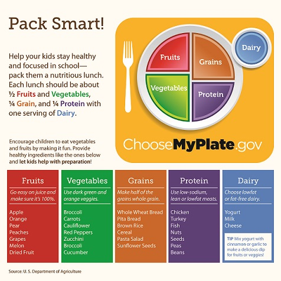

In 2011 the US government switched from the food pyramid to a food plate so as to help with portioning.
Nutrients include proteins, carbohydrates, fats, vitamins, minerals, and water. Healthy eating is not hard.
The key is to eat a variety of foods, including vegetables, fruits, and whole-grain products.
A healthy eating plan should include foods you enjoy along with plenty of healthy, not-too-processed foods like fruits, vegetables, whole grains,
low-fat dairy, lean meats, seafood, beans, and nuts. Thanks to their ability to satisfy, these low-calorie foods
will actually help you stick to your diet. The most satisfying foods have lots of fiber (like fruits, vegetables,
whole grains, beans, and nuts) and/or low-fat protein (found in meat, fish, dairy, and soy).
Ideally, you'll slowly wean yourself off favorite foods that are heavily processed and high in fat or calories, and replace them with more
nutritious options. At any time during this process, feel free to come up with a new eating plan that increases some healthful foods and
decreases others.
Most people who need to lose weight set lofty goals, dreaming of fitting into clothing sizes that may not be realistic for them. Yet losing as
little as 5% to 10% of your body weight can improve the way you feel, put a zip in your step, and, most importantly, improve your health. Studies
show that losing even small amounts of weight can improve overall health and, specifically, lower blood pressure, and blood sugar and cholesterol levels.